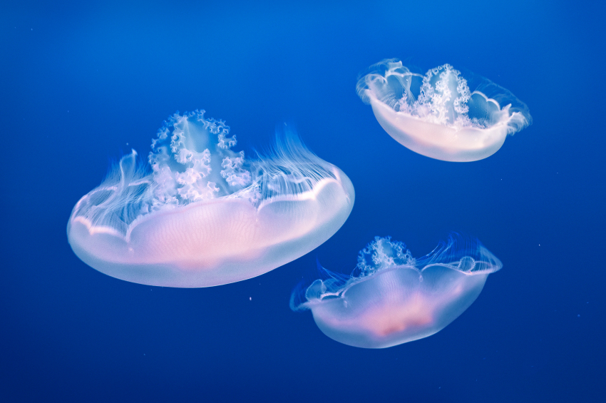
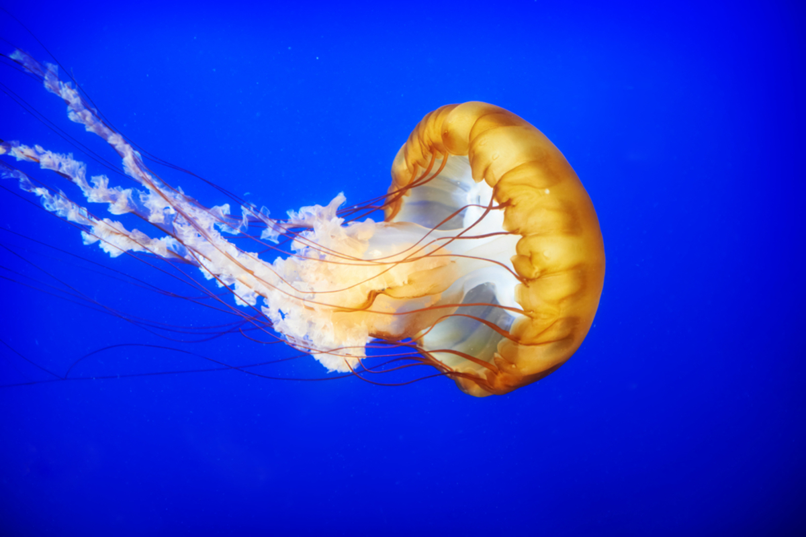
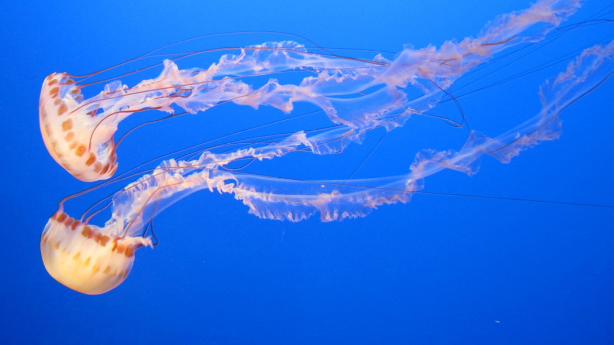

Οι μέδουσες (Jellyfish, ζελατινοειδή) αποτελούν μια μεγάλη ομάδα οργανισμών του ζωοπλαγκτού που υπάρχουν σε όλες τις θάλασσες και ζουν σε όλα τα βάθη. Διαθέτουν σημαντική ενεργητική κίνηση αλλά η εξάπλωσή τους εξαρτάται από τα θαλάσσια ρεύματα. Αυτό εξηγεί σε έναν βαθμό τις διαφορές στην παρουσία των πληθυσμών τους από θάλασσα σε θάλασσα. Επειδή η κίνησή τους είναι πολύ αδύναμη, δεν μπορούν να πάνε αντίθετα στα ρεύματα. Το μέγεθος τους ανάλογα με το είδος ποικίλει από μερικά χιλιοστά ως περίπου ένα μέτρο. Είναι αρπακτικά ζώα που τρέφονται από πλαγκτόν και προνύμφες ψαριών χρησιμοποιώντας τα κνιδοκύτταρα στα πλοκάμια τους.
Οι μέδουσες είναι θαλάσσια ασπόνδυλα (κνιδόζωα) της τάξης σκυφόζωα. Πρόκειται για πλαγκτονικούς οργανισμούς, οι οποίοι απαντώνται σε όλες τις θάλασσες του κόσμου. Αντιπροσωπεύουν το κυρίαρχο στάδιο του βιολογικού κύκλου των κοιλεντερωτών, υδρόζωων (υδρομέδουσες, που έχουν ένα κράσπεδο, που περιβάλλει την κοιλότητα που σχηματίζεται κάτω από την «ομπρέλα» τους) και σκυφόζωων (που δεν έχουν κράσπεδο),(σκυφομέδουσες). Ζουν σε ομάδες και το τσίμπημά τους προκαλεί κνησμό και παράλυση της λείας τους. Τρέφονται με μικρά ψάρια και ζωοπλαγκτόν, τα οποία συλλαμβάνουν με τα πλοκάμια τους.
Την κοινή μέδουσα, η οποία ζει στο Αιγαίο και στο Κρητικό πέλαγος, ο Ελληνικός λαός την ονομάζει τσούχτρα, επειδή μόλις ακουμπήσει το ανθρώπινο σώμα, εκκρίνει ένα υγρό το οποίο προκαλεί τσούξιμο και κνησμό.
Περιγραφή
- Το σώμα της μέδουσας έχει σχήμα καμπάνας και παράγει μια ζελατινώδη ουσία. Στην περιφέρεια έχουν πλοκάμια και αισθητήρια όργανα, Το κάθε πλοκάμι καλύπτεται με κύτταρα, που καλούνται κνιδοκύτταρα ή κνιδοκύστεις και μπορούν να τσιμπήσουν ή και να σκοτώσουν ζώα. Τα κύτταρα αυτά υπάρχουν και στο στόμα τους. Οι πιο πολλές μέδουσες χρησιμοποιούν τα κύτταρα αυτά για εξασφάλιση τροφής και για άμυνα. Άλλες δεν έχουν καθόλου πλοκάμια. Έχουν πολλά μικρά μάτια στο κωδωνοειδές σώμα τους, που τις επιτρέπει να έχουν όραση 360 μοιρών.
- Αν και στερούνται βασικών αισθητηρίων οργάνων και δεν έχουν εγκέφαλο, το νευρικό τους σύστημα τους επιτρέπει να αντιλαμβάνονται ερεθίσματα, όπως το φως και η οσμή, και να αντιδρούν γρήγορα σε αυτά. Κολυμπούν πολύ αργά, καθώς δεν έχουν υδροδυναμικό σώμα. Αντ’ αυτού, κινούνται με τέτοιο τρόπο ώστε να δημιουργούν ρεύματα, αναγκάζοντας τη λεία τους να φτάσει στα πλοκάμια τους. Η κίνηση αυτή γίνεται ρυθμικά με άνοιγμα και κλείσιμο του σώματός τους που μοιάζει με καμπάνα. Η πυκνότητά τους είναι σχεδόν ίση με την πυκνότητα του νερού.
- Το πεπτικό τους σύστημα δεν χρειάστηκε να εξελιχθεί σε σχέση με αυτό πολλών ζώων· από το ίδιο άνοιγμα (στόμα, βρίσκεται στο κέντρο και στο κάτω μέρος της «καμπάνας») γίνεται η πρόσληψη αλλά και η αποβολή της τροφής. Το στόμα της περιβάλλεται από κροσσωτά χείλη[3] και οδηγεί σε ακτινωτά σωληνάρια, τα οποία καταλήγουν στη γαστρική κοιλότητα. Η τελευταία είναι ένας κυκλικός σωλήνας, που καταλαμβάνει όλη την περιφέρεια του ζώου. Το σώμα σε μία ενήλικη μέδουσα αποτελείται κατά 94-98% από νερό. Η «καμπάνα» της τσούχτρας αποτελείται από ένα στρώμα επιδερμίδας και κατά το μεγαλύτερο μέρος από τη μεσογλοία. Πρόκειται για μία ακύτταρη, ημιδιαφανή, ζελατινώδη μάζα.
Σημασία για τον άνθρωπο
- Οι μέδουσες είναι σημαντική πηγή τροφής για τους Κινέζους αλλά και σε άλλες ασιατικές χώρες. Ενδεικτικά, στην Κίνα, οι επεξεργασμένες μέδουσες αφαλατώνονται με εμβάπτιση στο νερό όλη τη νύχτα και τρώγονται μαγειρεμένες ή ωμές. Συχνά σερβίρονται ως σαλάτα, μαζί με λαχανικά. Στην Ιαπωνία τις πλένουν, τις κόβουν σε λωρίδες και τις σερβίρουν ως ορεκτικό με ξίδι.
Εξάλλου, οι μέδουσες χρησιμοποιούνται και στη βιολογία. Ειδικότερα, το 1961 ανακαλύφθηκε στη μέδουσα του είδους Aequorea Victoria η πράσινη φθοριούχος πρωτεΐνη (GFP). Αυτή χρησιμοποιείται για τη μελέτη των γονιδίων των ιστών και του τρόπου έκφρασής τους. Το κολλαγόνο τους επίσης είναι θεραπευτικό μέσο για τη ρευματοειδή αρθρίτιδα.
- Σε πολλές χώρες, είναι συνηθισμένο να εκτίθενται οι μέδουσες σε ενυδρεία. Συχνά το φόντο στη δεξαμενή είναι μπλε και τα ζώα φωτίζονται από το πλευρικό φως με σκοπό να παραχθεί το φαινόμενο της έντονης αντίθεσης. Σε φυσικές συνθήκες, πολλές μέδουσες είναι τόσο διαφανείς που δεν μπορεί σχεδόν να τις δει κανείς.
Κάποια προβλήματα της αιχμαλωσίας των μεδουσών είναι ότι δεν μπορούν να προσαρμοστούν σε κλειστούς χώρους. Για να μην απομονώνονται τα ζώα σε γωνίες των ενυδρείων, οι επαγγελματίες εκθέτες χρησιμοποιούν κυκλικές δεξαμενές, όπου παράγουν ρεύματα νερού, καθώς τα ζώα εξαρτώνται από αυτά και τις μεταφέρουν από μέρος σε μέρος.
Επικινδυνότητα
- Όταν κάποιος τσιμπηθεί από τσούχτρα, χρειάζεται απαραίτητα πρώτες βοήθειες. Τα τσιμπήματα των σκυφόζωων μεδουσών γενικά δεν είναι θανατηφόρα. Ωστόσο, κάποια είδη από τα κυβόζωα (αυτόνομη τάξη), όπως το Irukandji, μπορεί να αποβούν θανατηφόρα. Το τσίμπημα των μεδουσών προκαλεί οξύ πόνο και μπορεί να προκαλέσει αναφυλαξία και ίσως τον θάνατο. Για τον λόγο αυτό, όταν κάποιοι άνθρωποι τσιμπηθούν από τσούχτρα, θα πρέπει να βγουν αμέσως έξω από το νερό, προς αποφυγή πνιγμού.
- Για τις πρώτες βοήθειες, οι κύριοι στόχοι είναι η αποφυγή τραυματισμού των διασωστών (γι’ αυτό συνιστάται να φορούν ειδικά ρούχα, που θα καλύπτουν σημεία του σώματος), η απενεργοποίηση των κνιδοκύστεων (για να μη γίνει ενδοφλέβια ένεση στον ασθενή) και η αφαίρεση των πλοκάμων που πιθανόν έχουν κολλήσει στο σώμα του ασθενούς.
- Για τα τσιμπήματα ενός συγκεκριμένου είδους μέδουσας, μπορεί να τοποθετηθεί ξίδι στην πληγή. Εναλλακτικά, μπορεί να χρησιμοποιηθεί και νερό της θάλασσας αν δεν είναι άμεσα διαθέσιμο το ξίδι. Δε θα πρέπει να χρησιμοποιείται φρέσκο νερό, γιατί η αλλαγή της ωσμωτικής τονικότητας μπορεί να απελευθερώσει επιπλέον δηλητήριο. Για τον ίδιο λόγο θα πρέπει να αποφεύγεται ο κνησμός του τραύματος, η χρήση οινοπνεύματος, αμμωνίας και παρόμοιων ουσιών. Ένα ζεστό μπάνιο μπορεί επίσης να βοηθήσει, με εξαίρεση την περίπτωση υποθερμίας.
- Η αφαίρεση των πλοκάμων μπορεί να γίνει με το χέρι, με τη χρήση ειδικών γαντιών. Έπειτα από την αφαίρεση μεγάλων κομματιών από μέδουσες, στο τραύμα μπορεί να μπει αφρός ξυρίσματος και με την άκρη ενός μαχαιριού, με ένα ξυράφι ή με πιστωτική κάρτα να αφαιρεθούν όλα τα εναπομείναντα κνιδοκύτταρα.


